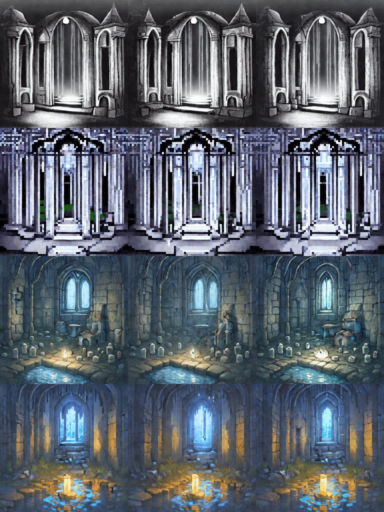
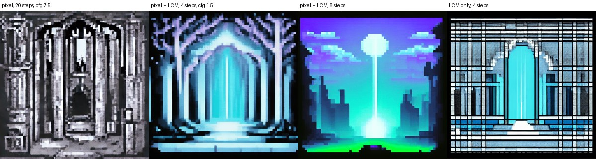
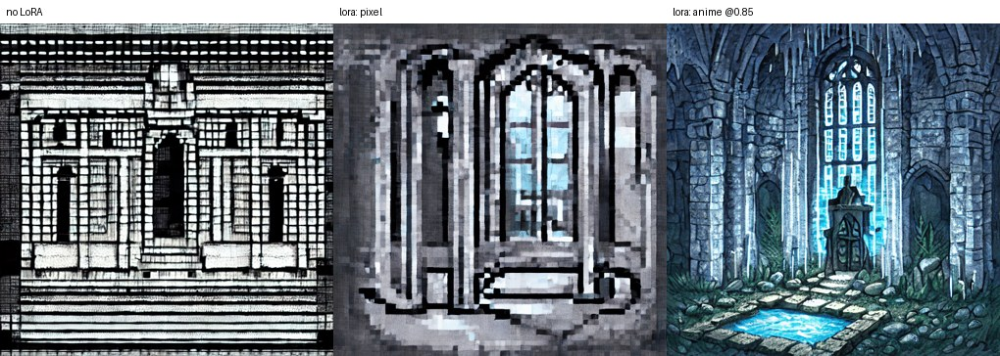
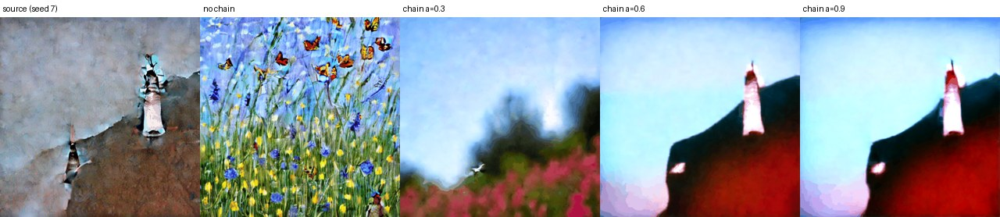

Features and abilities
Every feature, how to ask for it on the command line, and how to ask for it from the served HTTP API (tt-model serve). This page is updated as each served feature lands.
Feature matrix
| Feature | CLI (examples/generate.py) | Served (tt-model serve) |
|---|---|---|
| Prompt, negative prompt, frames, steps, guidance, seed, temporal alpha | --prompt … --temporal-alpha | same names, num_inference_steps, num_frames |
| Style LoRAs (SD 1.x, kohya format), stackable | --lora SOURCE[:FILE][@SCALE] | lora (a name from the operator's catalog) |
| LCM fast sampling (4 steps) | --lcm-lora | automatic for a catalog variant that includes the LCM-LoRA |
| Prompt travel (keyframe prompts) | --prompt-schedule | prompt_schedule |
| Live previews while generating | --preview-path | preview, preview_every, GET /v1/videos/preview |
| Chaining (continuity across runs) | --chain-from, --chain-save, --chain-alpha | chain_save, chain_from, chain_alpha (named chains) |
| Euler sampler (the CLI's Lightning) | --lightning | sampler: "euler" |
| MotionAdapter temporal attention (Phase 3) | --motion-adapter, --motion-adapter-alpha, --motion-adapter-skip | motion_adapter, motion_adapter_alpha, motion_adapter_skip (operator enables it) |
| CPU and simulator modes | --mode cpu|sim | Not served (CLI only) |
The served model runs on one Blackhole chip. Requests are handled one at a time.
Style LoRAs
A LoRA is merged into the model's weights on the CPU before they are uploaded to the chip, so the device runs ordinary Stable Diffusion with different numbers in it. The merge takes under a second and nothing is added per frame: 2.3 s per frame warm, with or without a LoRA.
$ python examples/generate.py --prompt "storybook anime illustration, a moonlit crypt" \
--lora "neonforestmist/sd15-storybook-anime-lora:storybook_anime_lora.safetensors@0.85"Stack LoRAs by repeating --lora; their deltas add. The file header is read before any model loads, and the run stops with a reason for an SDXL LoRA, a LoHa or LoKr file, a DoRA file, or a file without kohya lora_down / lora_up weights. The header's most common training tags are printed as trigger-word hints.
scripts/lora_device_check.py compares a LoRA's effect on the chip with the CPU. The effect arrives for every LoRA tried (correlation 0.94 for pixel art, 0.69 for storybook anime at 0.85, 0.86 for the LCM-LoRA). A small effect is partly buried in bfloat16 noise. Details are in docs/LORA.md.

Crypt, seed 666, top to bottom: no LoRA, pixel art, storybook anime at 0.85, both stacked.
LCM fast sampling
--lcm-lora merges latent-consistency/lcm-lora-sdv1-5 and samples with the LCM scheduler: 4 steps at guidance 1.5 instead of 25 steps at 7.5. It stacks with style LoRAs.
| Run (8 frames, seed 666, one chip) | Denoise | Per frame |
|---|---|---|
| Pixel art, 20 steps, guidance 7.5 | 18.6 s | 2.3 s |
| Pixel art + LCM, 4 steps, guidance 1.5 | 9.2 s | 1.2 s |
| Pixel art + LCM, 8 steps | 11.3 s | 1.4 s |
| Served, warm: LCM variant, 4 steps / style variant, 25 steps | 4.2 s / 21.6 s | 0.5 s / 2.7 s |

On the command line the speed-up is about 2x end to end, because VAE decode and the temporal blend do not shrink. Fewer steps also give less cross-frame blending: the first and last frames of a clip differed by 43.9 with LCM against 19.4 with 25 steps, so try 8 steps before using it for a loop. The grid lines in the LCM-only panel come from the prompt asking for "Pixel Art"; a neutral prompt gives a clean image.
Serving LoRAs
The operator defines a catalog of named variants in ANIMATEDIFF_LORAS. Each variant is a full model set kept on the chip, so a request picks one at no cost. Variants share one VAE. A request names a variant and never a repo id or a path.
$ tt-model serve episod/tt-animatediff --env ANIMATEDIFF_LORAS='{
"pixel": "artificialguybr/pixelartredmond-1-5v-pixel-art-loras-for-sd-1-5:PixelArtRedmond15V-PixelArt-PIXARFK.safetensors",
"pixel-fast": ["artificialguybr/pixelartredmond-1-5v-pixel-art-loras-for-sd-1-5:PixelArtRedmond15V-PixelArt-PIXARFK.safetensors",
"latent-consistency/lcm-lora-sdv1-5:pytorch_lora_weights.safetensors"]
}'$ curl -s localhost:8000/v1/videos/generations -H 'content-type: application/json' \
-d '{"prompt": "a moonlit crypt", "lora": "pixel-fast", "num_frames": 8}'GET /v1/modelslists the names underloras. An unknown name is a 400 that lists the valid ones.- A variant that includes the LCM-LoRA samples with LCM and defaults to 4 steps and guidance 1.5 when the request leaves them out. Values you send are used as sent.
- A bad catalog or incompatible file stops the server at startup, before it reports ready.
- LoRA files come from the Hugging Face cache or the network at startup, so a container with no network access needs them cached first.

Live previews
GET /v1/videos/preview reports the generation in flight: {"step": n, "total": N, "gif_b64": "…"|null, "running": bool}. It never waits on the device, so it answers while a generation runs (about 140 ms measured). The step counter always runs. The 256×256 GIF is rendered only when the request sets "preview": true, because each render costs about 0.4 s: 8 frames at 20 steps took 13.5–13.9 s without previews and 17.8–20.2 s with them. "preview_every": n renders every nth step.
step is 1-based and total is the loop's real step count (a 20-step request reports 21). The last frame stays readable after a run ends, until the next request begins, so check running.
Chaining
A request can save its final latents under a name ("chain_save": "lh"). A later request that sets "chain_from": "lh" blends them into its starting noise at chain_alpha (default 0.6), so the new prompt inherits the old composition. The names belong to the server: it stores them in its own directory under a hash of the name, keeps the newest 32, and forgets them when it stops. An unknown chain_from is a 400.

At 0.6 and 0.9 the lighthouse's tower and cliff carry into the meadow prompt, and the prompt itself is mostly lost: no flowers or butterflies appear. The library advises 0.2 to 0.55. At 0.3 the effect is small.
Sampler
The plain model samples with PNDM. "sampler": "euler" uses an Euler schedule on the same weights (the CLI's --lightning; no distilled weights are involved). 4 frames at 25 steps took 7.7 s with Euler and 7.9 s with PNDM, and the pictures differ. An LCM variant always samples with LCM, so naming a sampler with one is a 400.
Motion adapter (Phase 3)
The MotionAdapter's temporal attention can be injected into the UNet blocks. The operator enables it with ANIMATEDIFF_MOTION_ADAPTER=default (or a repo id or path), which loads the adapter at startup; GET /v1/models then reports "motion_adapter": true. Requests set "motion_adapter": true, with motion_adapter_alpha (0 to 1) and motion_adapter_skip (any of down0 down1 down2 mid up0 up1 up2). It works with the Euler sampler, prompt schedules, chaining and style LoRA variants, and not with an LCM variant.
With up1 and up2 skipped, 2 frames at 6 steps took 5.6 s on one chip. Without skipping it is far slower: about 52 s per frame at 25 steps measured earlier on a four-chip box, so an 8-frame request runs for minutes. Set client timeouts to match.
Request reference
POST /v1/videos/generations. The response is {"created": ts, "data": [{"b64_json": "<GIF>"}]}.
| Field | Default | Notes |
|---|---|---|
| prompt | (required) | Non-empty |
| negative_prompt | "" | |
| num_frames | 16 | 1–64 |
| num_inference_steps | 25 | 1–100. 4 for an LCM variant when omitted |
| guidance_scale | 7.5 | 0–20. 1.5 for an LCM variant when omitted |
| seed | 42 | |
| temporal_alpha | 0.35 | 0–1, cross-frame blend |
| height, width | 512 | Only 512 is accepted: the UNet is compiled at a fixed size |
| lora | none | A catalog name; 400 if unknown |
| prompt_schedule | none | Up to 16 {"frame": n, "prompt": "…"}; each frame must be below num_frames |
| sampler | pndm | pndm or euler; 400 with an LCM variant |
| chain_save, chain_from | none | Names (letters, digits, . _ -; up to 64 characters). Unknown chain_from is a 400 |
| chain_alpha | 0.6 | 0–1; 0.2–0.55 keeps the prompt in charge |
| motion_adapter | false | 400 unless the operator set ANIMATEDIFF_MOTION_ADAPTER; 400 with an LCM variant |
| motion_adapter_alpha, motion_adapter_skip | 1.0, [] | Only with motion_adapter: true |
| preview | false | Render preview GIFs for GET /v1/videos/preview |
| preview_every | library default | 1–100 |
| response_format | b64_json | Only b64_json |